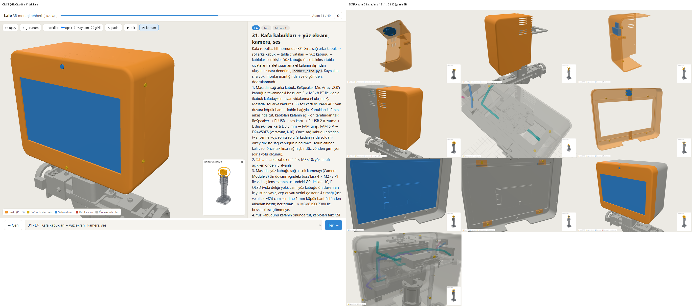
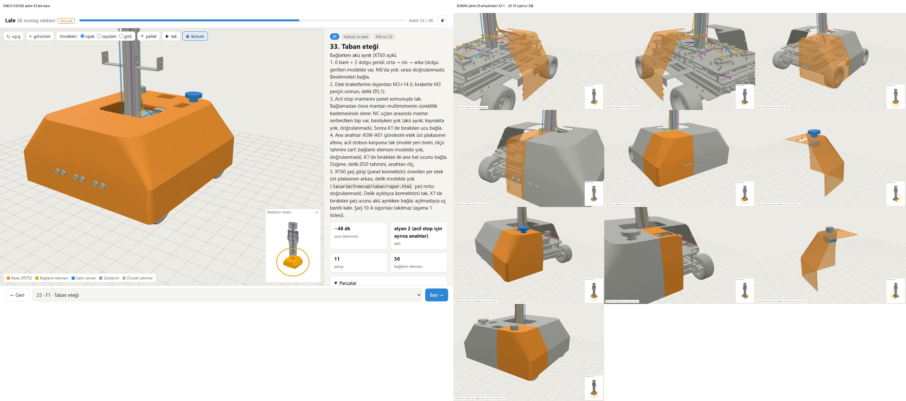
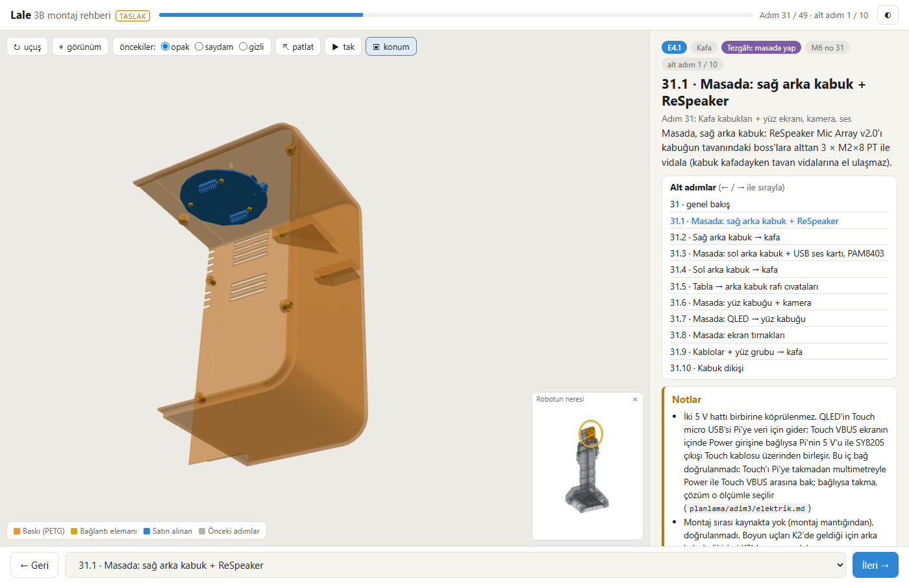
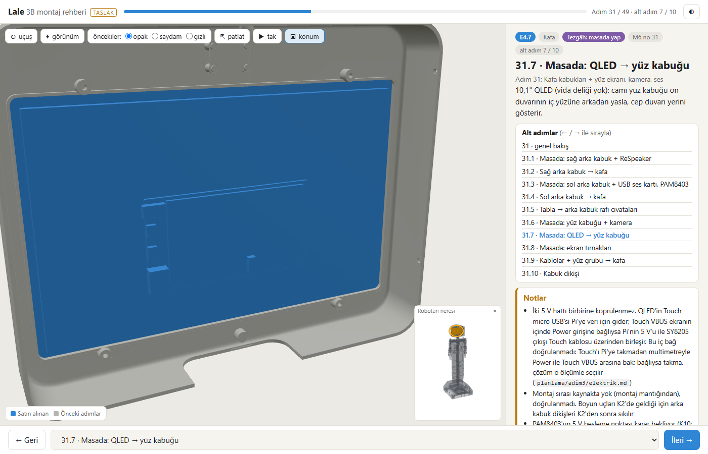
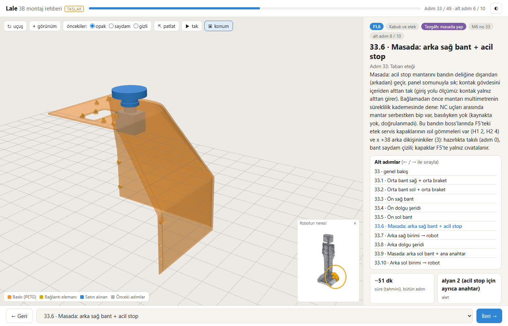
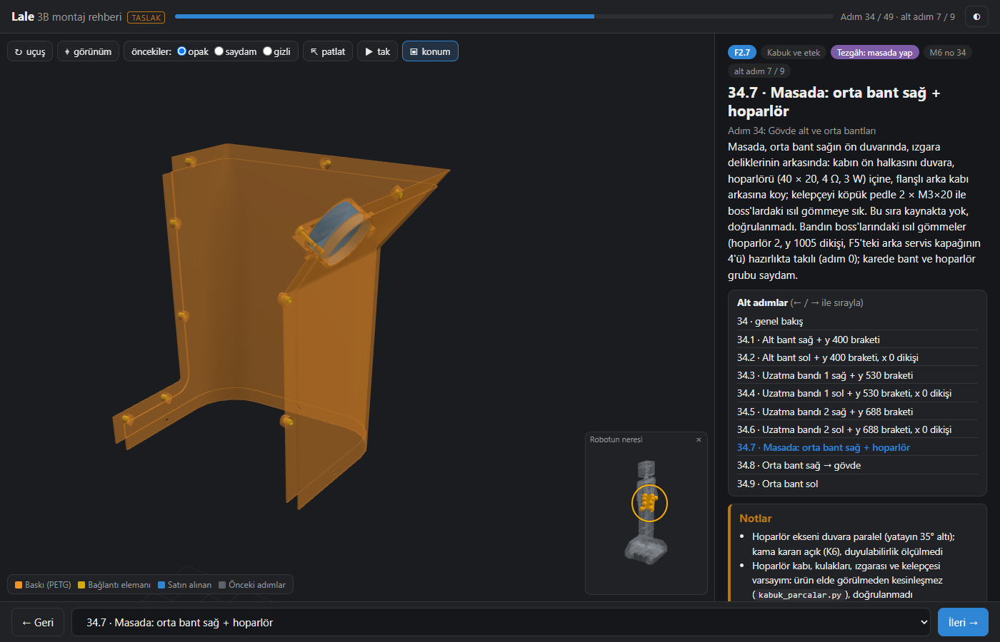
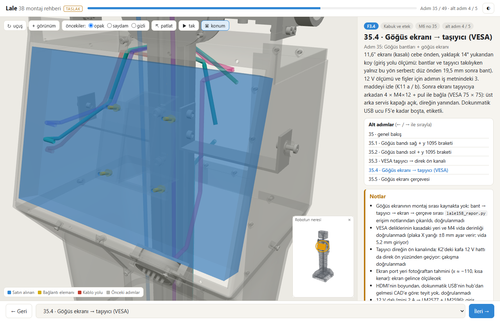
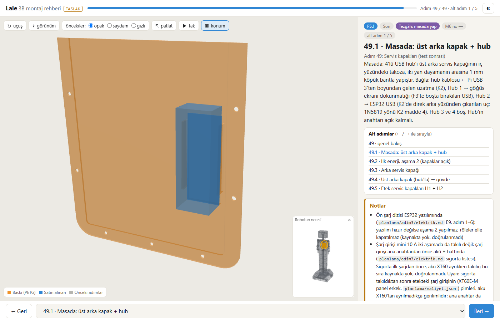

Lale F10d: kabuk adımları alt adımlara bölündü, takma yönleri ve panel sırası (P10.4)
Ajan C (ölçüm ve kayıt) · 11.11.2026 · dal lale-duzeltme · kaynaklar: F10d-brief.md, F10d-gunluk.md (A, düzeltme turu 1 dahil), F10d-kontrol.md (B), planlama/rehber/kontrol.json (16:52), C'nin kendi ölçümü (başsız Chrome, robot.glb ağ geometrisi)
Ne istendi
Ahmet rehberde adım 31 ve 33 için: "bu aşamalarda neyi nereye monte ediliyor pek anlaşılmıyor (genel olarak kabuk montajının tamamında bu sorun var)". 10.11 rehber dökümü de 50 adımın 7'sini anlaşılmıyor buldu; adım 31'de 19 parçanın 13'ü tamamen gizliydi, bazı parçalar animasyonda katının içinden geçiyordu. Brief (F10d-brief.md): kabuk adımlarını (E4 31, F1 33, F2 34, F3 35, F4 36, F5 49) alt adımlara böl; takma yönlerini giriş yolu ölçümüyle düzelt; panel sırası = takma sırası; iki kollu tezgâh adımlarında ve adım 25'te görünürlük; perdelenmeye alt adım sınırı. Ana adım sayısı 50, adım kimlikleri ve model geometrisi değişmeyecekti.
Ne yapıldı
- Alt adım altyapısı: F10c'nin adım içi sıra grubu (
sira) = alt adım; ayrı ikinci sıra tanımı yok. Her alt adımın kendi başlığı, metni, satırları, kamerası, saydam listesi; masada hazırlanan birimler (masa) ve robota bağlanışları (bag). - Alt adım sayıları: E4 (31) 10 · F1 (33) 10 · F2 (34) 9 · F3 (35) 5 · F4 (36) 3 · F5 (49) 5 = 42 kabuk alt adımı; iki kollu tezgâh adımları D1c (21), H0b (43), H0d (45), H0e (46) sağ / sol 2'şer. Toplam 50 alt adım, 100 konum.
- Gezinme:
?adim=31.3ya da#31.3;31/31.0adımın genel bakışı; ←/→ genel bakıştan alt adımlara, sonra sıradaki adıma; sayaç "Adım 31 / 49 · alt adım 3 / 10"; adres çubuğu (sorgu + çapa) konumu izliyor, yenilemede aynı yer açılıyor. Alt adımı olmayan adım eskisi gibi. - E4 sırası F10c'deki ölçülmüş sıra: sağ arka kabuk (masada + ReSpeaker) → bağla → sol arka kabuk (masada + ses kartı, PAM8403) → bağla → tabla cıvataları → yüz grubu (masada: kamera, QLED, tırnaklar) → kablolar + yüz grubu → dikişler.
- Takma yönleri giriş yolu ölçümüyle (QLED arkadan, bantlar yandan, kapaklar üstten, hornlar servo ekseninden); patlatma mesafesi parça boyuyla orantılı (etek bantları 630–830 mm yerine 155–187 mm).
- Düzeltme turu 1 (kontrol
F10d-kontrol.md): ısıl gömme ev sahibi malzemeden (B-2), görünürlük eşiği ≥ 30 px ve tek başına çizilişin ≥ %20'si (B-1, B-7, B-8), masada yabancı kablo gizli (B-3), yuvarlama istisnaları kaldırıldı (B-5), adres sorgusu gezinmeyi izliyor (B-10), patlatmada cıvata ev sahibinin önünde (B-11),F10d-K3geri çekildi (B-4).
Önce / sonra (31 ve 33)








Kabul tablosu (C'nin ölçtüğü)
| Ölçüt | C'nin ölçtüğü | Kaynak | Günlükteki sayı | Durum |
|---|---|---|---|---|
| Anlaşılırlık | 42 kabuk alt adımının hepsine baktım (açık tema; 8'ine koyu da): açık 34, zor 8, anlaşılmıyor 0 | C'nin kareleri (başsız Chrome, 1400 × 900) | 34 / 8 / 0 | geçti |
| Görünürlük (kendi karesinde) | Yöntem: her yeni parça tek tek gizlenip sahne yeniden çizilir, okurun gördüğü kareden farklı piksel sayılır (gerçek malzemeler, saydamlık dahil; küçük görünüm, lejant, düğmeler maskeli). 42 kabuk + 8 iki kollu alt adım: birim dışı yeni parça 361; eşiğin (≥ 30 px ve ≥ %20) altında 2, 0 px 0. Birim içi (bağla alt adımında birimin içinde kalan) 58 parçanın 56'sı masa alt adımında eşiği geçiyor, 2'si yukarıdaki iki parça | scratchpad/f10d-c/olcum.jsonl | 0 / 335 (kimlik tamponu, saydam örtmez) | fark (engel değil) |
| Eşik altı iki parça | 31.3 ısıl gömme p0762 (tabla rafı sol z−75): 10 / 142 px; 34.7 kelepçe cıvatası p0440: 30 / 310 px (%10). İkisi de üç 0,4 opaklıklı katmanın arkasında (kabuk / ses kartı / köpük; bant / hoparlör / kab); A'nın ölçümü saydamı örtücü saymadığı için 142 ve 247 px buluyor. Aynı alt adımlarda kardeş parçalar (öbür üç somun, öbür kelepçe cıvatası) görünür | C'nin tanı kırpımı | — | bilgi |
| Isıl gömme (veri) | Adında "gömme somun" 164; ev sahipli 164; ev sahibiyle aynı ana adımda 164; alt adımlı adımlarda 127'si ev sahibiyle aynı alt adımda, önce / sonra 0; ev sahibi türü baskı 144, PETG-CF 20 | C'nin betiği, rehber-veri.json | 164 / 164 | geçti |
| Isıl gömme (geometri, FreeCAD'siz) | 164 somunun 164'ünde merkez ev sahibinin sınır kutusunda. Kaba test (somun çevresinde 26 nokta, ışın paritesi) 157 / 164 aynı ev sahibi; ayrılan 7'si bindirme dikişindeki somunlar (skor 3 ↔ 2). İnce testte (200 yön × 3 kabuk) somuna en yakın kabukta (+0,4 mm) 7 / 7 veri ev sahibi önde (ör. orta bant 31 ↔ göğüs bandı 20); ince test 9 somunda koşuldu | robot.glb, C'nin s2_geo.py / s2b_ince.py | katı ataması 24 / 24 (FreeCAD) | geçti |
| Taşınan somunlar | git diff HEAD verisi: ana adımı değişen parça tam 59, hepsi ısıl gömme; veri listesiyle aynı küme; başka parçada a değişmedi (b 45, t 2 yalnız bu 59'da). Tablo günlük 11.1 ile birebir | C'nin betiği | 59 | geçti |
| 49.1 metni | Hub'ı kapağa yapıştırma + kablolar; ısıl gömme yok. F5 bağlantı metni: "Isıl gömmeler kapaklarda değil, bantların boss'larında …"; F5 satırlarında ısıl gömme satırı yok | veri, kare, PDF s. 67 | aynı | geçti |
| Masada yabancı kablo | 31.1, 31.3, 31.6–31.8, 33.6, 33.9, 34.7, 49.1: görünen başka adım şeması 0 (sahne sorgusu); karelerde havada kablo yok | C'nin ölçümü | 0 | geçti |
| Yapı | 1192 ↔ 1192 (veri, mesh, kontrol.json); satırda birden çok geçen 0, birden çok adımda 0, birden çok alt adımda 0; alt adımlı adımlarda sira = grupların birleşimi (sıra dahil); alt adım 50, konum 100; robot.glb ve robot-glb.js HEAD ile aynı | C'nin betiği, git | aynı | geçti |
| Gezinme | ?adim=31.3, #31.3, 49.5, 31, 31.0, 31.99 → 31.10, 33.10 doğru; ileri tam tur 100 konum beklenen sırayla, geri tam tur ters sırayla; her konumda adres sorgusu ve çapa 100 / 100; ?adim=30 + 6 ok → 31.5, yenilemede 31.5 | C'nin s8_gez.py | 100, 20 örnek | geçti |
| Arayüz | Seçim (tıklanan parça vurgulu, satır seçili), patlat (33.3'te 7, 31.6'da 13, 49.5'te 10 parça yerinden) → sıralı tak 4 / 4, 4 / 4, 3 / 3 satırda hepsi yerinde; küçük görünüm çizili; ağsız (çevrimdışı + http/https engelli) dış istek 0, konsol hatası 0; 360 px'te 4 alt adımda taşma 0 | C'nin ölçümü + F10a-dogrula | geçti | geçti |
kontrol.json | 50 / 50 + alt 50 / 50, konsol 0; denetim: yasak 0, ASCII 0, gruplama 0, çelişki 0, zorunlu eksik 0; sira ulaşılamaz 0 (565 bağlantı), sınama geçti; sira.giris girilemez 0, sınama 3 / 3, istisna 2 (34.8 orta bant sağ, 49.4 üst arka kapak: dinlenmede temas, gerçek derinlik 0,28 / 0,057 mm); uçuş 240 satır, istisnasız çarpışan 0, istisna 12; ısıl gömme denetimi 164, hata 0; perdelenme alt adımda gerekçesiz 0, gerekçeli 102; yazdırma 100 / 100 kare, boş 0, en düşük oran 0,0595 | kontrol.json | aynı | geçti |
| Uçuş istisnaları (12) | K55 bindirme 8 (33.3 / 33.5 etek ön, 35.1 / 35.2 göğüs, 35.5 çerçeve ×2, 36.1 / 36.2 omuz); iki parçalı yol 1 (33.4 ön dolgu); çekiç somun 2 (35.3); dinlenmede temas 1 (31.6 kamera) | kontrol.json sira.ucus | 12 | gerekçeli |
| Perdelenme toplamı | adım sonu 291 → 262; fark yalnız taşınan somunların adımlarında (20, 27, 33, 35, 36, 41, 44, 46, 47, 49) | kontrol.json HEAD ↔ şimdi | — | ölçüm |
| Veri ↔ kontrol ↔ kod | kontrol.json ozet.veri_uretim 15:34 = veri uretim; sha256 veri 6aaaf339feed058a, glb 760bf1ff5955ce03 (günlükle aynı); kod dosyalarının en yenisi 15:32:04 (rehber_metin.py), veri 15:34:45–48, kareler 16:08–16:16, PDF 16:18, kontrol 16:52; rehber_metin.py'deki 381 metin / istisna / kamera alanı veriyle aynı (fark 0; gizli_ok, ucus_ok, giris_ok dahil) | C'nin betiği | aynı | tutarlı |
| 69 sayfa; en küçük yazı 8,1 pt; 100 gömülü 3B görüntü, en düşük çizim oranı 0,108, boş 0; görüntüsüz 5 sayfa (19, 34, 39, 41, 46: devam sayfaları). 12 sayfaya baktım (33, 35–37, 40, 42, 43, 45, 50, 52, 67, 69) | PyMuPDF | 69, 8,1 pt | geçti | |
| Komutlar | F10d-dogrula --goruntu-yok GEÇTİ (525 s; sonuçlar A'nın JSON'uyla aynı, yalnız tarih / kare listesi / süre farklı; depodaki A sürümü korundu); F10a-dogrula --kanit-yok 0 (F10a kareleri değişmedi); F9b-dogrula 0 (kuyruktan sonra da 0); carpisma_kos kontrol 0; regresyon --yazma 10 / 10; F9c-dogrula 1 (hata 17, bilinen; P10.9) | C'nin koşusu | aynı | geçti |
Anlaşılırlık (C'nin sınıflaması)
| Alt adım | Hüküm | Gerekçe (kare + metin) |
|---|---|---|
| 31.1–31.4 | açık | Masada kabuk (saydam) + ReSpeaker tavanda / ses kartı ve PAM yan duvarda; sonra kabuk kafada. Metindeki kablo bağlantıları karede yok, parça ve yeri belli |
| 31.5 | zor | 4 cıvata tablanın köşelerinde görünür; raf, saydam kabuklar ve kablolar arasında ayırt edilmiyor |
| 31.6–31.8 | açık | Kamera üst boss'ta, QLED cepte arkadan, 4 tırnak köşelerde |
| 31.9 | zor | Yüz grubu kafanın önünde belli; metindeki 4 kablo bağlantısı (CSI, HDMI, Power, Touch) karede yok |
| 31.10 | zor | 9 dikiş cıvatası sarı, kenarlarda görünür; saydam kafa kablo yoğun, cıvatalar küçük |
| 33.1–33.10 | açık | Orta bantlar, ön sağ, ön dolgu, ön sol, masada arka sağ + acil stop (mantar ve kontak görünür, yabancı kablo yok), bağla, arka dolgu, masada arka sol + ana anahtar, bağla. Bant bant sıra ve yer okunuyor |
| 34.1–34.3, 34.5 | açık | Alt ve uzatma bantları sağ / sol; braket ve cıvata ortada. 34.3 ile 34.5 kadrajı çok benzer; ayrım küçük görünümden |
| 34.4, 34.6 | zor | Sol bantlar içten bakışla, bant kareyi dolduruyor; iki kare neredeyse aynı; x 0 dikiş cıvataları kenarda |
| 34.7 | zor | Hoparlör grubu ızgara duvarının iç yüzünde görünür, kelepçe cıvatası biri soluk (yukarıda); halka / ped / kab sırası karede ayırt edilmiyor |
| 34.8, 34.9 | açık | Bant hoparlörle gövdede; sol orta bant |
| 35.1, 35.2, 35.5 | açık | Göğüs bantları ve çerçeve; cıvatalar görünür |
| 35.3 | zor | Taşıyıcı ve cıvata görünür; kadraj yakın, kablolar önde, kanal ve çekiç somun seçilmiyor |
| 35.4 | açık | Ekran saydam; 4 VESA cıvatası taşıyıcıda görünür (kontrolde 0 px'ti) |
| 36.1, 36.2 | açık | Omuz bandı sağ / sol ayrı karede |
| 36.3 | zor | 3 cıvata büyük ve sarı; kadraj yakın, kablolar önde, yer yalnız küçük görünümden |
| 49.1–49.5 | açık | Masada kapak + hub (ısıl gömme kapakta değil, yabancı kablo yok), ilk enerji, arka kapak, üst arka kapak, H1 + H2. 49.3 / 49.4 kadrajı benzer |
Toplam açık 34, zor 8 (31.5, 31.9, 31.10, 34.4, 34.6, 34.7, 35.3, 36.3), anlaşılmıyor 0. Kontrolün anlaşılmıyor dediği iki alt adım: eski 34.4 (şimdi 34.7) zor, 35.4 açık. A'nın "zor → açık" dediği 33.6, 33.9, 49.1: üçü de açık. Koyu temaya özgü sorun görmedim. Sınıflama A'nınkiyle aynı çıktı. Zor kalanların hiçbiri 0 piksel değil; düzeltmeleri kamera / kadraj işi (F10e'ye).
Kontrolün bulduğu yanlışlar ve düzeltmeleri
- Yanlış yerdeki 34 ısıl gömme somun (B-2; 26 yanlış ev sahibi, 8 ev sahipsiz; 49.1 somunları kapağa taktırıyordu). Kök neden ev sahibinin yalnız aynı adımda aranmasıydı. Düzeltme: ev sahibi malzemeden, bütün ana parçalar aday; somun ev sahibinin adımına taşınır. Sonuç: 59 somun taşındı (kontrolün saydığı 34'ten geniş: D1b → D1a 8, E2c → E2b 4, E2 → E2c 1, G2 → G0 2, H0c → H0a 2, H0f → H0e 4 da çıktı); 164 / 164 ev sahipli; kalıcı denetim
sira.isil_gommehata 0. - "Modelde dört girişim" (F10d-K3) yapay çıktı (B-4): 5,53 / 1,5 / 3,91 mm eksen ışınının yüzeye teğet kirişiydi; gerçek derinlik 0,057–0,28 mm, FreeCAD katı analizlerinde 0. Geri çekildi, kuyruğa girmedi; iki giriş istisnasının metni "temas, çarpışma değil" oldu.
- Perdelenme istisnaları 107 → 0 görünmeyen (B-1, B-6, B-7, B-8): eşik > 0 px'ten ≥ 30 px ve ≥ %20'ye çıktı, ısıl gömmeler de ölçülüyor; alt adım ve kamera / saydam ayarlarıyla kabukta kendi karesinde görünmeyen yeni parça 0 / 335 (A'nın ölçümü). C'nin farklı yöntemi 2 soluk parça buldu (yukarıda).
- Masada yabancı kablo (B-3):
app.jssemaDurum'da masa alt adımında başka adımın şeması gizli; C'nin sorgusunda 0. - Uçuş istisnası 25 → 12 (B-5): yuvarlama istisnaları ölçüm aracının yapaylığıydı, kaldırıldı; kalan 12'nin hepsi ölçülü.
- Küçükler: adres sorgusu gezinmeyi izliyor (B-10), 49.5 patlatmasında cıvata kapağın önünde (B-11), yazdırma piksel denetimi 100 kareyi kapsıyor (B-9), ölçülmemiş "kaydırarak" ifadeleri indirildi (B-12).
Denetimin sınırları
- Erişim denetimi 20 mm el payı varsayımıyla; giriş ve uçuş yolu yalnız düz yollar ve 6 eksen yönü (+ çizilen yön); iki bacaklı yol yalnız 33.4'te ölçüldü.
- Kablolar modelde yok (gösterim şemaları parça değil); kablo bağlantı adımlarının (31.2, 31.4, 31.9) karesinde kablo uçları görünmüyor.
- Bayraksız tam FreeCAD üretimi bu turun son kod hâliyle bir kez koştu, veriyi (15:34) yazdıktan sonra bellek yüzünden kesildi; yeniden koşulmadı.
kontrol.json, kareler ve PDF FreeCAD'siz yoldan (--veri-yok) aynı veriyle üretildi. C'nin denetimi: kod dosyaları veri zamanından önce, kod metinleri veriyle bire bir, taşınan somunlar veride; ısıl gömmenin katı ataması (FreeCAD isInside) yalnız o koşudan, C'nin ağ ölçümü onunla uyumlu. - Görünürlük durağan karede ölçüldü; animasyon karelerine bakılmadı. Gerçek baskıda bant esnemesiyle takılabilirlik ölçülemez (parça yok).
Açık kararlar
Kuyruk: açık 50, kapandı 5, toplam 55. F10d-K2 (ısıl gömme adımı) veri düzeltmesiyle çözüldüğü, F10d-K3 yapay olduğu için kuyruğa girmedi.
Sonraki pakete (F10e) devredilenler
- Zor kalan 8 alt adımın kamera / kadrajı: 31.5 (raf vurgusu), 31.9 (kablo uçları ya da "karede yok" notu), 31.10 (dikiş cıvataları), 34.4 / 34.6 (içten bakış, iki kare aynı), 34.7 (hoparlör grubunun iç sırası; soluk kelepçe cıvatası), 35.3 (kanal, çekiç somun), 36.3 (arka dikiş). 31.3'teki soluk ısıl gömme (
p0762). Renk, braket / boss vurgusu ve cıvata yeri işaretleri bunlara da yardım eder. - Etek ön iki bacaklı yol ölçümü (K55 c seçeneği).
- Arka servis kapağı ↔ orta bant derinliği yeniden ölçülmedi.
- Adım 41 (G4) "+x'ten kaydırarak takılmaz" uyarısı ölçülmedi.
- Bellek düzelince bayraksız tam üretim bir kez daha; beklenen fark yok.
Kayıt
| Commit | Konu |
|---|---|
| paket | tasarim/freecad/rehber/, rehber/ (app.js, index.html, stil.css, yazdir.html, veri, goruntu), planlama/rehber/ üretici çıktıları + R-gunluk.md, README.md, F10d-* (brief, günlük, kontrol, doğrulama betiği ve JSON'ları, görüntüler), F10a-dogrula.py / .json, karar-kuyrugu.md (K55), demo |
| bu rapor | F10d-rapor.html |
| planlama | planlama/dongu-158.md (olduğu gibi) |
Her commit açık git add listesiyle. Dışarıda kalanlar: oturum öncesinden kalan tasarim/freecad/kabuk/gorsel/*.png, montaj/yerlesim-kontrol.json, izlenmeyen klasörler, F10e-brief.md, kilit dosyası. Artık kullanılmayan eski rehber karesi yok (adım kareleri yerinde, alt adım kareleri yeni). Demo parmak izinde yalnız karar-kuyrugu.md ve rehber-veri.json anahtarı değişti.